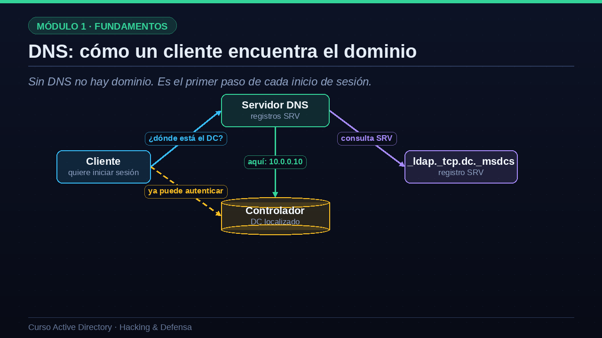
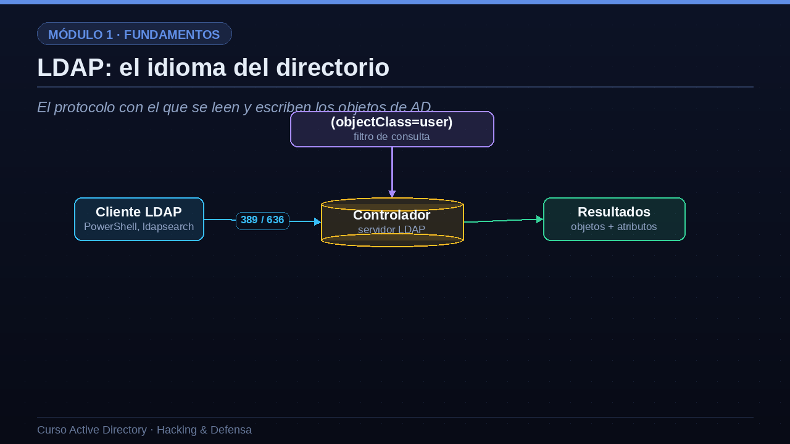
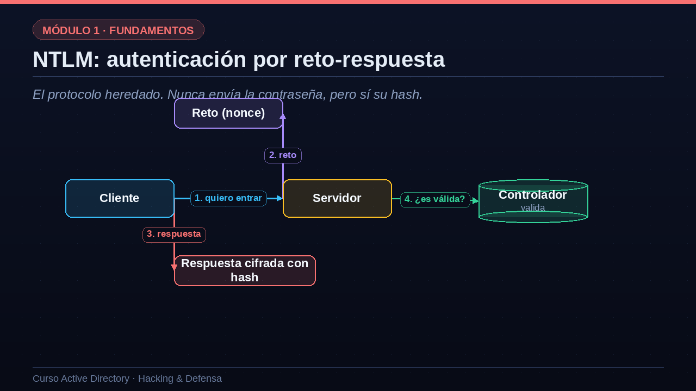

01DNS: cómo un cliente encuentra el dominio
Sin DNS no hay dominio. Es el primer paso de cada inicio de sesión.
Empecemos por DNS, el sistema de nombres de dominio. En Active Directory, DNS no es opcional: es el GPS sin el cual nada funciona. Veamos qué ocurre cuando un cliente quiere iniciar sesión. Lo primero que hace no es contactar con el controlador, porque todavía no sabe dónde está. Lo que hace es preguntar al servidor DNS: oye, ¿dónde está un controlador para mi dominio? El servidor DNS consulta unos registros especiales llamados registros SRV, con nombres como guion bajo ldap, guion bajo tcp, punto dc, que anuncian qué máquinas ofrecen cada servicio de AD. El DNS devuelve la dirección del controlador y, solo entonces, el cliente puede contactar con él para autenticarse. Por eso, para un atacante, el servidor DNS es una mina de información sobre la topología del dominio.

02Registros DNS clave en AD
Conviene conocer los registros DNS más importantes de un dominio. El registro que empieza por guion bajo ldap, guion bajo tcp, punto dc, punto msdcs, localiza los controladores de dominio. El que empieza por guion bajo kerberos localiza el servicio Kerberos, es decir el centro de distribución de claves. El registro guion bajo gc localiza el catálogo global, del que hablaremos en un momento. Y el registro de tipo A del propio nombre del dominio resuelve directamente a las direcciones de los controladores. Un atacante que puede consultar el DNS del dominio obtiene, con una simple petición, un mapa de dónde están las piezas más valiosas de la red. Herramientas de enumeración como nslookup o nmap explotan precisamente estos registros.
| Registro | Para qué sirve |
|---|---|
| _ldap._tcp.dc._msdcs | Localiza controladores de dominio |
| _kerberos._tcp | Localiza el servicio Kerberos (KDC) |
| _gc._tcp | Localiza el catálogo global |
| dominio.local (A) | Resuelve el nombre del dominio a IPs de DC |
03LDAP: el idioma del directorio
El protocolo con el que se leen y escriben los objetos de AD.
El segundo protocolo es LDAP, el protocolo ligero de acceso a directorios. Si DNS es el GPS, LDAP es el idioma con el que se habla con el directorio. Todo lo que AD almacena se consulta y se modifica mediante LDAP. Un cliente, que puede ser PowerShell, la herramienta ldapsearch o una aplicación corporativa, se conecta al controlador por el puerto trescientos ochenta y nueve en claro, o el seiscientos treinta y seis cuando va cifrado. Las consultas se expresan con filtros; por ejemplo, el filtro objectClass igual a user devuelve todos los usuarios. El controlador responde con los objetos que coinciden y sus atributos. Lo crucial desde el punto de vista de seguridad es que, por defecto, cualquier usuario autenticado del dominio puede leer una enorme cantidad de información mediante LDAP. Esa lectura es la base de la enumeración y de herramientas como BloodHound.

04El catálogo global
Relacionado con LDAP está el catálogo global. Imagina un índice que resume todo el bosque: guarda una copia parcial de todos los objetos de todos los dominios. Gracias a él, una búsqueda puede encontrar a un usuario sin necesidad de saber en qué dominio concreto está almacenado. El catálogo global escucha en los puertos tres mil doscientos sesenta y ocho en claro, y tres mil doscientos sesenta y nueve cifrado. Para un administrador es una herramienta de eficiencia; para un atacante, es un atajo perfecto, porque enumerar el catálogo global le revela de golpe la estructura completa del bosque, no solo la de un dominio. De nuevo vemos el mismo patrón: lo que hace cómoda la administración hace también cómodo el reconocimiento.
- Un índice de todo el bosqueGuarda una copia parcial de todos los objetos de todos los dominios.
- Búsquedas rápidas entre dominiosPermite encontrar un objeto sin saber en qué dominio está.
- Puertos 3268 y 3269LDAP contra el catálogo global, en claro y cifrado.
- Útil para el atacanteEnumerar el catálogo global revela el bosque completo de una sola vez.
05NTLM: autenticación por reto-respuesta
El protocolo heredado. Nunca envía la contraseña, pero sí su hash.
Llegamos al tercer protocolo: NTLM, el sistema de autenticación heredado, anterior a Kerberos. Aunque es antiguo, sigue activo en casi todas las redes por compatibilidad. Funciona por reto-respuesta, en cuatro pasos. Primero, el cliente le dice al servidor que quiere entrar. Segundo, el servidor le envía un reto, que es un número aleatorio. Tercero, el cliente cifra ese reto usando el hash de su contraseña y devuelve la respuesta. Y cuarto, el servidor le pasa el reto y la respuesta al controlador de dominio, que es quien conoce el hash y verifica si todo cuadra. La idea importante es que la contraseña nunca viaja por la red. Pero fíjate en un detalle enorme: lo que demuestra la identidad no es saber la contraseña, sino poseer su hash. Y de ahí nace su gran debilidad.

06NTLM: por qué es peligroso
Veamos por qué NTLM es tan peligroso y cómo se defiende. Su debilidad de diseño es que el hash es, en la práctica, la credencial. Como el cliente demuestra su identidad cifrando con el hash, a un atacante le basta con robar ese hash, sin necesidad de conocer la contraseña en texto claro. De ahí surge el ataque Pass-the-Hash, que consiste en reutilizar un hash NTLM robado para autenticarse en otros sistemas. Y de ahí surge también el NTLM relay, en el que el atacante reenvía la autenticación de una víctima hacia otro servicio, haciéndose pasar por ella. ¿Qué se puede hacer? Reducir el uso de NTLM todo lo posible y forzar Kerberos; firmar las comunicaciones SMB y LDAP para frenar el relay; y desactivar la vieja versión uno de NTLM, aún más débil. Estudiaremos estos ataques en detalle en el módulo de hacking.
Debilidad de diseño
- El hash es la credencialSi robas el hash, te autenticas sin la contraseña.
- Pass-the-HashReutilizar un hash NTLM robado en otros sistemas.
- NTLM RelayReenviar la autenticación de una víctima a otro servicio.
Qué hacer
- Reducir su usoForzar Kerberos y auditar dónde se sigue usando NTLM.
- Firmar SMB y LDAPMitiga los ataques de relay.
- Vigilar NTLMv1Desactivar la versión 1, débil, en favor de la 2.
07Los puertos que delatan a un DC
Un escaneo de estos puertos grita: aquí hay un controlador de dominio.
Antes de cerrar, fijémonos en algo muy práctico para la fase de reconocimiento. Un controlador de dominio tiene una huella de puertos abiertos muy característica. El puerto cincuenta y tres es DNS; el ochenta y ocho es Kerberos; el trescientos ochenta y nueve y el seiscientos treinta y seis son LDAP en claro y cifrado; el cuatrocientos cuarenta y cinco es SMB, que sirve ficheros, las GPO a través del recurso SYSVOL y llamadas RPC; y los puertos tres mil doscientos sesenta y ocho y sesenta y nueve son el catálogo global. Cuando un atacante lanza un escaneo con nmap y ve esta combinación de puertos, sabe con casi total certeza que está ante un controlador de dominio. Por eso la segmentación de red y el filtrado de estos servicios son medidas defensivas de primer orden.
| Puerto | Servicio | Uso |
|---|---|---|
| 53 | DNS | Localización de servicios |
| 88 | Kerberos | Autenticación por tickets |
| 389 / 636 | LDAP / LDAPS | Consulta del directorio |
| 445 | SMB | Ficheros, GPO (SYSVOL) y RPC |
| 3268 / 3269 | Catálogo global | Búsquedas en todo el bosque |
08Resumen de la lección
Hagamos el resumen. DNS localiza los servicios del dominio mediante registros SRV; sin él, los clientes no encuentran a los controladores. LDAP es el idioma con el que se consulta y se modifica el directorio, y es la base de toda la enumeración. NTLM es el protocolo de autenticación heredado, por reto-respuesta, en el que el hash funciona como credencial, lo que abre la puerta a Pass-the-Hash y a los ataques de relay. Y hemos visto la huella de puertos que delata a un controlador. En la próxima lección nos centraremos en los objetos del directorio: usuarios, grupos, equipos, los SPN y los permisos. Nos vemos en la lección cuatro.
- DNS localizaCon registros SRV, los clientes encuentran a los DC. Sin él, no hay dominio.
- LDAP consultaLee y modifica objetos. Base de toda la enumeración.
- NTLM autentica (heredado)Reto-respuesta donde el hash es la credencial: Pass-the-Hash y relay.
- La huella de puertos88, 389, 445, 3268... delatan a un controlador de dominio.